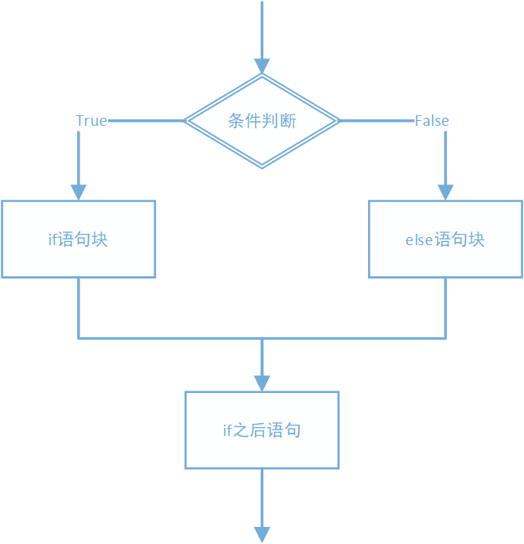
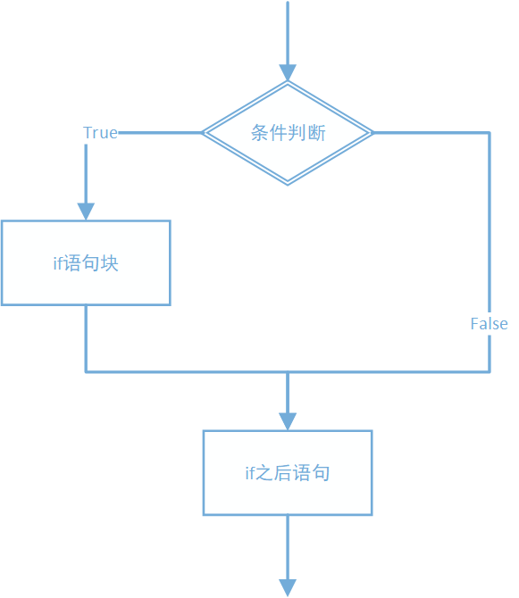
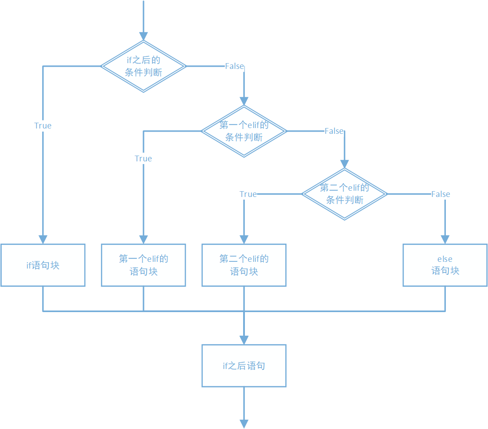

4.1 if语句
Python中使用if语句来实现选择结构，语法为：
if 条件:
if语句块
else:
else语句块
if-else语句
if-else语句的标准写法为：if后面跟上需要判断的条件，一般为关系表达式或逻辑表达式，结果必须是布尔类型值。如果结果为真则执行if语句块；如果结果为假则执行else语句块（如果省略else语句，则没有else语句块）。执行结束后，if语句结束，继续执行if语句之后的语句。
if语句块和else语句块（如果有else语句块）在一次执行过程中，只有一个会被执行，两个都执行或者都不执行的情况不存在。
流程图为：

例如：4.1-if-else语句.py
# if-else语句
age = int(input('请输入年龄：'))
if age >= 18:
print('已经成年')
else:
print('还未成年')
print('if-else后面的语句')
当输入的age为20时，输出结果如下：
已经成年
if-else后面的语句
如果输入的age的值为10，则输出结果如下：
还未成年
if-else后面的语句
else部分可以省略
如果else部分省略，则流程如下：注意对比和上图的区别：

省略else的例子如下：
# if-else语句
age = int(input('请输入年龄：'))
if age >= 18:
print('已经成年')
print('if-else后面的语句')
输入的age的值为10，则输出结果如下：
if-else后面的语句
if-elif-else语句
当需要判断的条件不止一个时，可以采用if-elif-else语句。
首先判断if后面的条件，如果为真，则执行if语句块；如果为假，则进入到其后的第一个elif进行条件判断，如果为真，则执行这个elif语句块，如果为假，则继续进入到下一个elif判断；如果所有elif的判断都不满足，则进入else语句块执行（如果有else语句的话）。
不论执行了哪一个语句块，执行完毕后，整个if-elif-else语句结束，继续执行if语句之后的语句。
流程图如下：

例如：4.2-if-elif-else语句.py
# if-elif-else语句
score = int(input('请输入成绩：'))
if score > 90:
print('成绩优秀！')
elif score > 80:
print('成绩良好！')
elif score > 60:
print('成绩及格。')
else:
print('.....')
print('if语句后面的部分')
如果输入85，则执行结果为：
成绩良好！
if语句后面的部分
注意多个条件判断的顺序，如果统一是大于的判断，则判断的比较值要从大到小；反之则是从小到大，不能打乱顺序。
因为进入到某一个elif语句块的前提是：之前所有的if或elif的条件判断都为假，只有这个elif条件判断为真。如果前面有任何一个if或elif的条件判断为真，则进入到相应的语句块中执行并结束，不会再来到这个elif做判断。
例如：
# 判断条件顺序，顺序颠倒的话，程序有逻辑错误
# 条件判断的符号为>，条件判断顺序从大到小，反之，从小到大。
score = int(input('请输入成绩：'))
if score > 90:
print('成绩优秀！')
elif score > 60:
print('成绩及格。')
elif score > 80:
print('成绩良好！')
else:
print('.....')
print('if语句后面的部分')
如果输入85，预期结果应该输出成绩良好！，但是实际输出结果为：
成绩及格。
if语句后面的部分
这说明在第一个elif判断时，85>60的结果为真，则进入这个elif语句块执行，后面的成绩良好语句块将没有被执行。
if嵌套
if语句的嵌套就是在一个任意形式的if语句中，有一个任意形式的if语句作为其中的一条语句。通常称为外层和内层if语句。
执行的过程是先进行外层if的条件判断，如果进入到有内层if的语句块，执行到内层if时，再进行内层if的条件判断。
例如：4.3-if嵌套.py
# if嵌套语句
age = int(input('请输入年龄：'))
score = int(input('请输入成绩：'))
if age >= 18:
print('年龄合格，准许参军。')
if score >= 90:
print('身体素质优秀！==>去当飞行员！')
else:
print('达不到飞行员素质。==>当个普通士兵。')
else:
print('还不够参军年龄，过几年再来。')
如果输入年龄为20，成绩为100，则执行结果为：
请输入年龄：20
请输入成绩：100
年龄合格，准许参军。
身体素质优秀！==>去当飞行员！
if语句虽然可以嵌套很多层，但是一般不建议嵌套超过三层，否则程序过于复杂，难于理解。